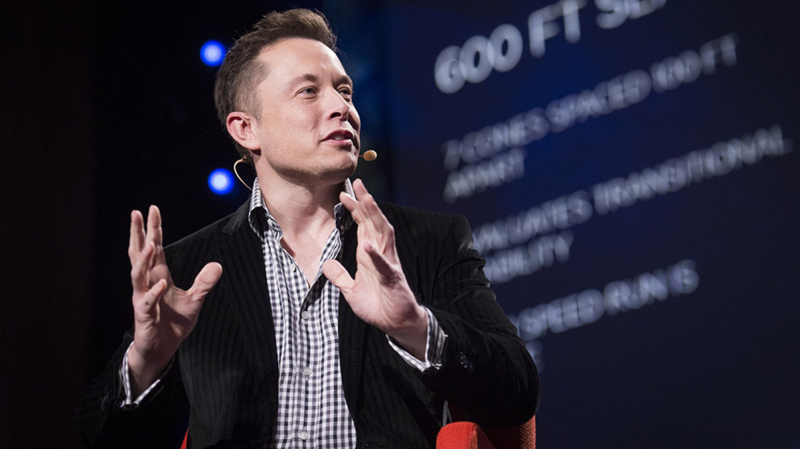

Our History
TechCon began in 2010 as a small gathering of innovators passionate about the future of technology.
Over the years, it has evolved into one of the world’s leading technology conferences, attracting
thousands of participants from around the globe. The event continues to serve as a platform for
sharing ideas, showcasing innovations, and fostering collaboration across industries.
Our Mission
The mission of TechCon 2024 is to inspire, connect, and empower the next generation of tech leaders.
We aim to bridge the gap between innovation and implementation by providing a space for learning,
networking, and creativity. Our goal is to drive technological growth that benefits communities and
industries worldwide.
Notable Past Speakers
Dr. Ada Lovelace
Known as the first computer programmer, Dr. Lovelace's groundbreaking ideas continue to
inspire generations of coders and engineers. Her keynote address at TechCon 2018 emphasized
the importance of creativity in programming.
Elon Musk

As a visionary entrepreneur and innovator, Elon Musk's presentation at TechCon 2019
explored the intersection of artificial intelligence, sustainable energy, and space exploration.
Dr. Fei-Fei Li
A leader in artificial intelligence research, Dr. Li's insights on ethical AI development
continue to influence how the industry balances innovation with responsibility.